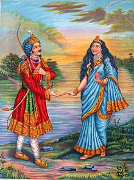
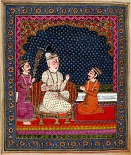
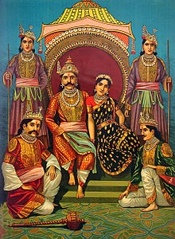
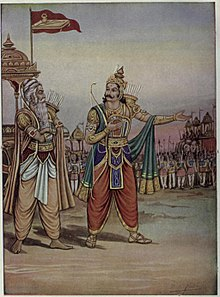
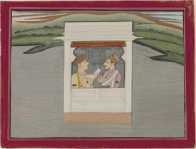

Kuru Dynasty (C. 1200 BCE - 500 BCE)
Sudas was an Indo-Aryan tribal King of the Bharatas, during the main or middle Rigvedic Period (c. 14th Century BCE). He led his tribe to victory in the Battle of the Ten Kings near the Parsuni (modern Ravi River) in Punjab, defeating an alliance of the powerful Puru tribe with other tribes, for which he was eulogised by his Purohita Vashistha in a hymn of the Rigveda.
Pratipa

In the Epic Mahabharata,Shantanu was a Kuru King of Hastinapura. He was decendant of the Bharata race, of the lunar dynasty and Great-Grandfather of the Pandavas & Kauravas. He was the youngest son of King Pratipa of Hastinapura and had been born in the latter's old age. The eldest son Devapi & leprosy & gave up his inheritance to become a hermit. Etymology Shantanu or Santanu is dervied from Sanskrit meaning
Wholesome.He is best known for being the father of Bhishma, one of the mightiest warriors of all the time.
In the Epic Mahabharata, Chitrangada is the Elder Son of Shantanu & Satyavati. He ascended the throne of Hastinapura after his father's death, but was killed by a Gandharva Namesake. Chitrangada's fame brought to his palace gates a Gandharva also named Chitrangada, who challenged him for a duel. They fought a fierce and evenly matched battle for three years on the banks of river Saraswati, at the end of which the Gandharva emerged successful.
In the Epic Mahabharata, Vichitravirya (Sanskrit: विचित्रवीर्य, vicitravīrya) is the younger son of queen Satyavati and King Shantanu and grandfather of the Pandavas and Kaurava. His elder brother Chitrangada, had initially succeeded their father to the throne of the Kuru Kingdom, but when he died childless, Vichitravirya succeeded him. He was married to Ambika and Ambalika. Vichitravirya too died childless like his brother, and through a procedure by his half-brother sage Vyasa, his wives and a maid gave birth to three children, namely Dhritarashtra, Pandu & Vidura.

In the Epic Mahabharata, Dhritarashtra (Sanskrit: धृतराष्ट्र, dhṛtarāṣṭra; lit. "He who supports/bears the nation") is the King of Hastinapur at the time of the Kurukshetra War, the epic's climactic event. He was born to Vichitravirya's first wife Ambika, and was fathered by Veda Vyasa. Dhritarashtra was blind from birth, and became father to one hundred sons and one daughter by his wife Gandhari (Gāndhārī), and another son Yuyutsu by Sughada, his wife's maid. These children, including the eldest son Duryodhana, came to be known as the Kauravas.
In the Epic Mahabharata, Pandu (Sanskrit: पाण्डु Pāṇḍu, lit. yellowish, whitish, pale), was the king of Hastinapura, the son of Ambalika and Vyasa. He is more popularly know as the earthly father of Pandavas, who were called so after him. He was said to be responsible and a great warrior, who expanded his Kingdom during his rule. With Vichitravirya having died of sickness, Bhishma unable to take the throne because of his vow, and Bahlika's line unwilling to leave Bahlika Kingdom, there was a succession crisis in Hastinapur. Satyavati then invited her son Vyasa to impregnate the queens Ambika and Ambalika under the Niyoga practice. When Vyasa approached Ambalika, she got frightened due to his scary appearance, she had become pale in disgust; hence, her son was born pale. Thus Pandu's name.

In the Epic Mahabharata, In the Epic Mahabharata, Yudhishthira (Sanskrit: युधिष्ठिर, IAST: Yudhiṣṭhira) was the eldest son of King Pandu and Queen Kunti and the king of Indraprastha and later of Hastinapura (Kuru). He was the leader of the successful Pandava side in the Kurukshetra War. At the end of the epic, he ascended to heaven. The word Yudhishthira means "the one who is steady in the war", from the words, yuddha (युद्ध) meaning 'war', and sthira (स्थिर) meaning 'steady'. His other names are-
- Bharata vanshi (भारत वंशी) - descendant of Bharata (emperor)
- Ajatashatru (अजातशत्रु) - one without enemies
- Dharmanandan (धर्म नंदन) - The son of Dharma (Righteousness)
- Paarth (पार्थ) - The Son of Pritha (Kunti)

Duryodhana (literally means Dur= Extremely hard Yodhana= Yudh/Fight; the one with whom the fight is extremely hard) is a major character in the Hindu epic Mahabharata and was the eldest of the Kauravas, the hundred sons of blind king Dhritarashtra and Queen Gandhari. Being the first born son of the blind king, he was the crown prince of Hastinapura along with his cousin Yudhishtra who was a few days older than him. Karna was the closest friend of Duryodhana. Notably, Duryodhana, with significant assistance from Karna, performs Digvijaya Yatra when the Pandavas are in exile, conquering all kings in every direction of the world, establishing himself as the emperor of the world.

Pariksit (Sanskrit: परिक्षित्, Parikṣit) was a Kuru king who reigned during the Middle Vedic period (12th-9th centuries BCE). Along with his son and successor Janamejaya I, he played a decisive role in the consolidation of the Kuru state, the arrangement of Vedic hymns into collections, and the development of the orthodox srauta ritual, transforming the Kuru realm into the dominant political and cultural center of northern Iron Age India.
He also appears as a figure in later legends and traditions. According to the Mahabharata and the Puranas, he succeeded his greatuncle Yudhishthira to the throne of Hastinapur.
He also appears as a figure in later legends and traditions. According to the Mahabharata and the Puranas, he succeeded his greatuncle Yudhishthira to the throne of Hastinapur.
 Janamejaya (Sanskrit: जनमेजय) was a Kuru king who reigned during the Middle Vedic period (12th-9th centuries BCE). H.C. Raychaudhuri dates Parikshit, his father, in ninth century BC.[2] Michael Witzel dates the Pārikṣita Dynasty of the Kuru Kingdom to the 12th-11th centuries BC
Janamejaya (Sanskrit: जनमेजय) was a Kuru king who reigned during the Middle Vedic period (12th-9th centuries BCE). H.C. Raychaudhuri dates Parikshit, his father, in ninth century BC.[2] Michael Witzel dates the Pārikṣita Dynasty of the Kuru Kingdom to the 12th-11th centuries BC
Satanika
Aswamedhadatta
Asima-Krishna
Nichakra
Ushna
Chitraratha
Vrishnimat
Sushena
Sunitha
Rucha or Richa (Sanskrit Devanagari: ऋचा) (Hindi: Richa) refers to a shloka (couplet) or mantra, usually two to four sentences long, found in the Sanskrit religious scriptures, the Vedas. The etymological origin of rucha is the Sanskrit word, ruc (ऋच्), which means to praise. Rucha, is therefore, one ruc after the other. Other meanings of ruc are splendour, worship, a hymn. Rucha can also refer to a verbal composition of celestial sounds called "shrutis"; the Gayatri Mantra is a rucha as well. Rucha means "aphorism of Rig Veda".
Nrichakshu
Sukhihala
Pariplava
Sunaya
Medhavin
Nripanjaya
Mridu
Tigma
Vrihadratha
Vasudana
Satanika II
Udayana
Ahinara
Khandanpani
Niramitra
Kshemaka